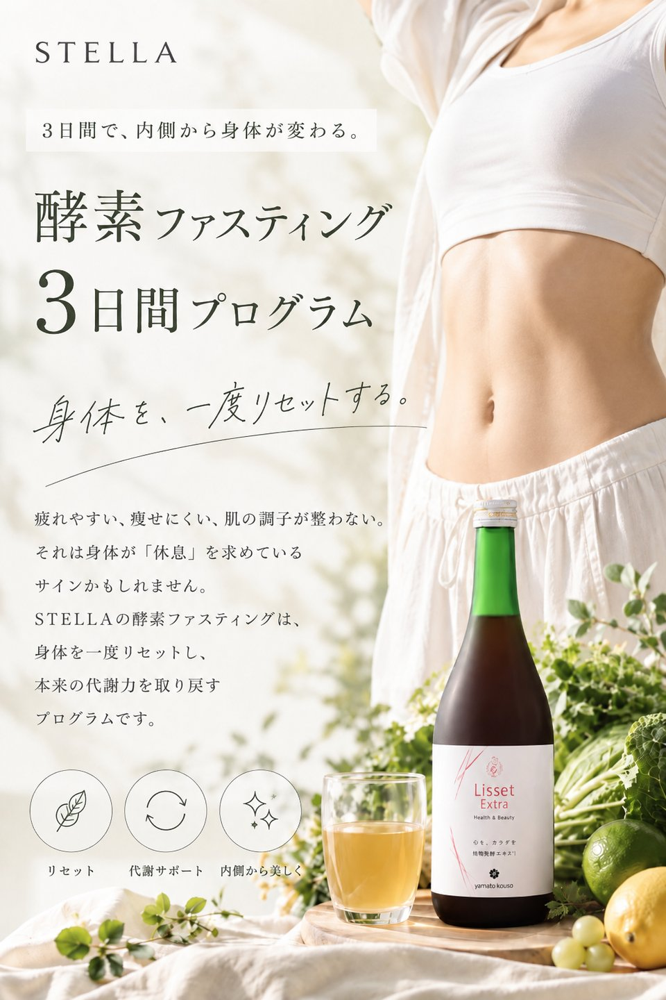
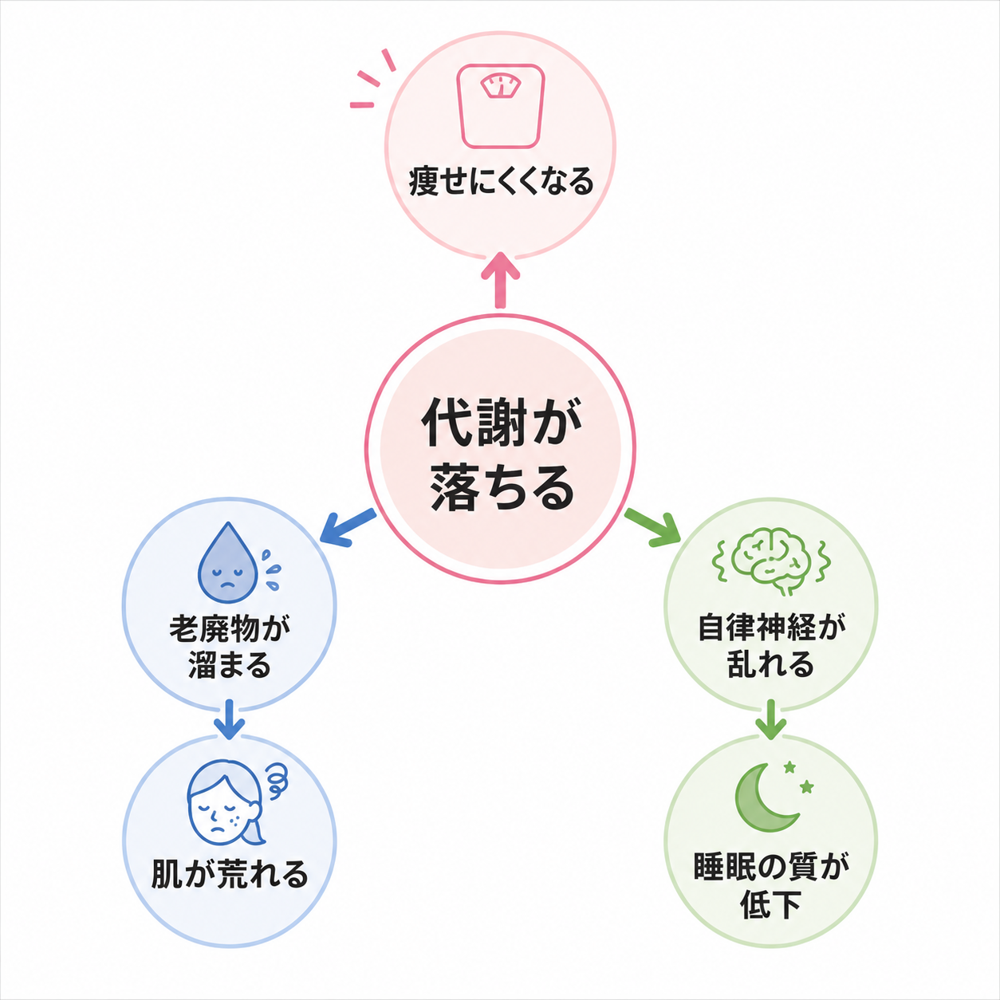
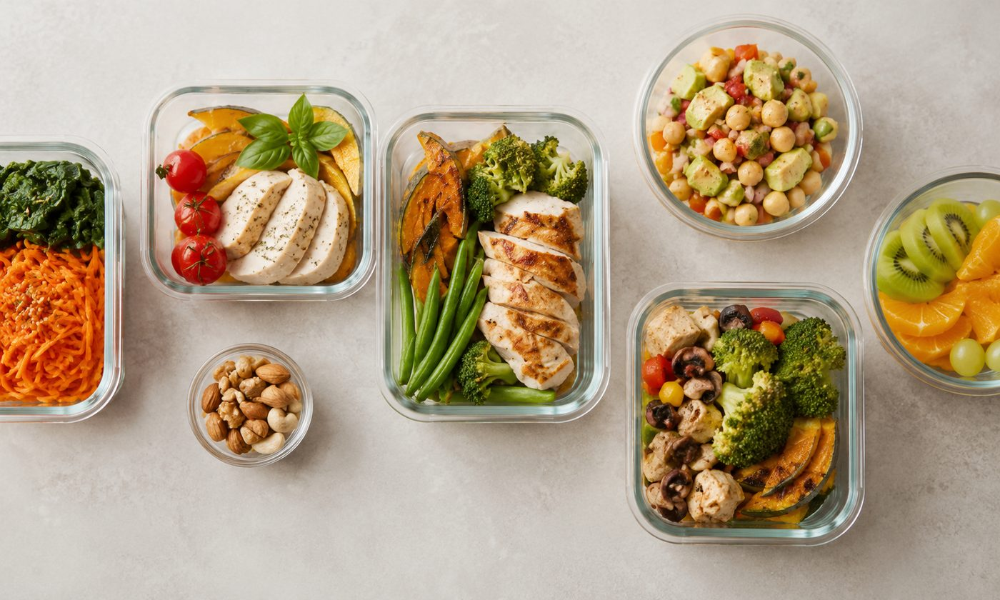
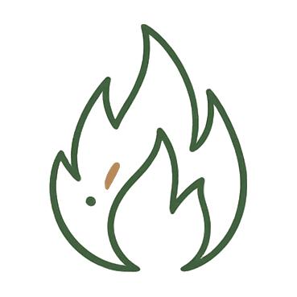
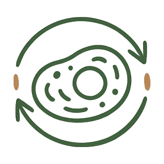
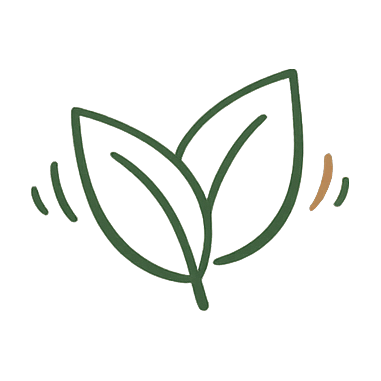
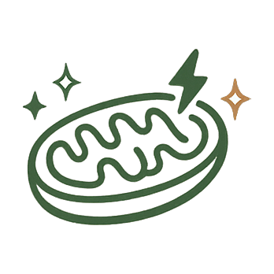
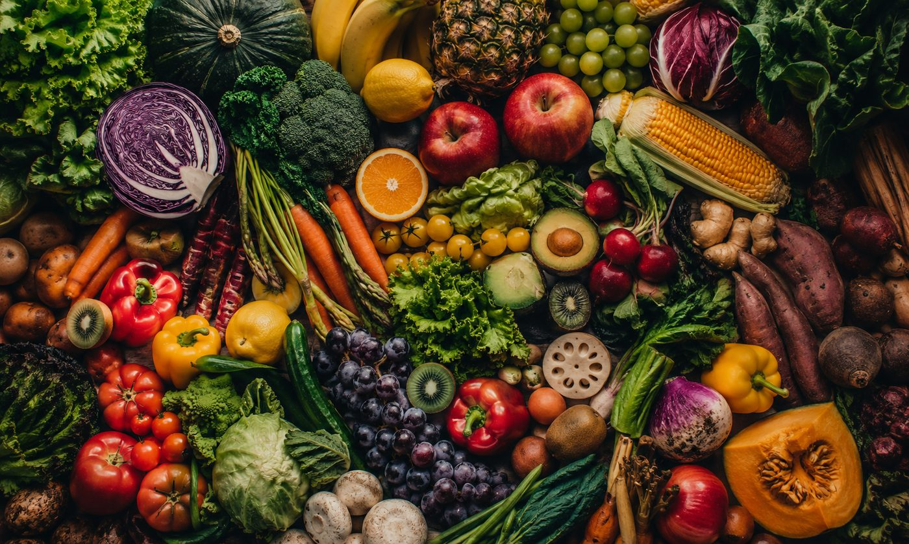

Check
頑張っているのに結果が出ない――
それは意志の問題ではなく、“身体が変わるステップを正しく実践する”ことで必ず結果につながっていきます。
Why Fasting
私たちの身体は、毎日休むことなく働き続けています。食べたものを消化・吸収し、エネルギーをつくり、不要なものを排出する。しかし現代では、食事や間食の回数が増え、胃腸を休める時間が短くなっていることが現状です。

このように、負のループが続いています。
だからこそ、一定時間食事を控え、
身体を休ませる時間を
つくることが大切です。
Results
プログラム後の
平均体重変化
身体の軽さを
実感した割合
3ヶ月後も体調を
維持できた割合
※当プログラム受講者アンケートより。効果には個人差があります。
Voice
M.K さん40代・会社員
半年以上ずっと停滞期で、何をやっても変わらなくて正直もう諦めかけていました。ファスティングを試してみたら、身体がリセットされた感覚があって、そこから少しずつ変化が出始めました。甘いものへの欲求も自然と落ち着いて、食事のコントロールが楽になったのが一番の変化です。内側が整うとこんなに違うんだと実感しています。
Y.S さん30代・会社員
ずっと便秘に悩んでいて、肌もくすみがちで髪もパサパサでした。プログラム中から腸内環境が改善しはじめ、体重が落ちるのはもちろん、肌にツヤが出てきたのと、髪がしっとりしてきたのには正直びっくりしました。酵素を摂ることの大切さを身をもって実感しています。
A.T さん50代・フリーランス
何年も、疲れが取れないのが当たり前になっていました。でもプログラム中から少しずつ身体が軽くなるのを感じて、終わった後は朝の目覚めが全然違う。食事と身体のつながりを初めて実感できた体験でした。
▼ 受講者インタビュー動画
※音声が流れます。字幕付きなので、音を出せない場所でもご覧いただけます。
※個人の感想です。効果には個人差があります。
Program
腸を整えながら、身体をファスティングモードへ移行。和食中心の食事で少しずつ胃腸を慣らしていきます。専用レシピと毎日のサポートで不安なく準備できます。

酵素ドリンクと水分で栄養を補いながらデトックス。コーチが毎日チェックインし、体調・メンタル面をしっかりサポートします。24時間LINEで対応するので、初めての方でも安心です。
リバウンドを防ぐために段階的に食事を戻す、最も大切なフェーズ。お粥から始め、消化の良い食事で腸を整えます。ここでの食事の選び方が、その後の身体の変化を左右します。
Science
ファスティングは、単に「食べないダイエット」ではありません。一定時間食事を控えることで、身体の中ではさまざまな生理学的変化が起こることが研究で報告されています。

脂肪をエネルギーとして利用しやすくなる食事を摂らない時間が続くと、インスリンの分泌が低下します。すると、身体は蓄えられた脂肪を分解し、エネルギーとして利用しやすい状態へ切り替わります。

細胞のメンテナンス機能「オートファジー」が活性化ファスティング中は、不要になったタンパク質や傷ついた細胞の一部を分解・再利用するオートファジーが活性化しやすくなることが知られています。

炎症反応を抑え、身体の不調を和らげるファスティングが体内の炎症反応を抑え、だるさや疲れ、肌の不調の改善につながる可能性が、近年の研究で報告されています。

「ミトコンドリア」の働きをサポートミトコンドリアは、細胞内でエネルギーを生み出す重要な器官です。ファスティングはその機能を高める可能性が示唆されており、細胞のエネルギー効率や健康維持への効果が期待されています。
※これらは研究で報告・示唆されている内容であり、効果には個人差があります。特定の疾患の予防・治療を目的とするものではありません。
Stella Method
STELLAでは、水だけで行う断食ではなく、植物発酵エキスを使用した酵素ファスティングを採用しています。発酵由来の成分や植物由来の栄養素を補いながら行うことで、ファスティング中の栄養補給をサポートし、身体への負担を抑えながら取り組むことができます。
また、発酵食品は腸内環境や消化機能に良い影響を与える可能性が報告されており、身体の内側から整えるサポートとしても注目されています。

身体を休ませながら、
必要な栄養を補う。
それがSTELLAの酵素ファスティングです。
Plan
まず、身体をリセットするところから。
準備期2日・ファスティング3日・復食期2日｜計7日間
※非会員価格 75,000円（税込）
※ファスティングプログラムは、STELLA非会員の方もお申し込みいただけます。
非会員の方は完全オンラインでのご案内となり、ファスティングドリンク6本（送料無料）を含め料金は75,000円（税込）です。詳しくは無料カウンセリングにてご案内いたします。
Next Step
3日間のファスティングで、身体はリセットされます。しかしここで多くの方が直面するのが「終わった後、何を食べればいいの？」という疑問です。せっかく整えた身体も、食習慣が戻ってしまえば元の状態に逆戻りしてしまいます。
リセットした身体を土台に、
食習慣そのものを変える。
それがSTELLAの
ダイエットサポート
（オンライン食事指導）プログラムです。
※ダイエットサポートプログラムはSTELLA会員様限定のメニューです。会員登録・詳細についてはカウンセリング時にご案内します。
Synergy
ファスティングで身体をリセット
＋ 食事指導で習慣化
＝ 自分で身体をコントロールできる！
Price
すべて税込・会員価格です
ファスティング単体7日間
ファスティング7日間＋食事指導1ヶ月会員様限定
ファスティング7日間＋食事指導3ヶ月会員様限定
Support Flow
Voice
ファスティングで-3kg落ちた後、そのまま食事指導に進みました。食事に対しての正しい知識と管理方法を教わりながら実践することで、1ヶ月で-5kg達成。自分の食事の偏りや不足に気づきながら少しずつ食べ方が変わっていきました。サポートが終わった今も、学んだ知識が日々の食事選びに活きています。会食や飲み会があっても以前のように罪悪感を感じなくなって、自分でコントロールできているという感覚が持てるように。生理前の食欲の波も以前より穏やかになり、身体が安定してきたのを実感しています。
これまでいろんなダイエットを試してきましたが、どれも長続きしませんでした。ここで学んだのは、独学では絶対に知れなかった食事の知識ばかり。目から鱗なことが多くて、続かなかった理由がやっとわかりました。知識が増えると行動が変わって、気づいたら習慣になっていました。3ヶ月後には体調が安定して、周りから見た目が変わったと言われるように。正しく知ることが、一番の近道だと実感しています。
▼ 受講者インタビュー動画
※音声が流れます。字幕付きなので、音を出せない場所でもご覧いただけます。
※個人の感想です。効果には個人差があります。
FAQ